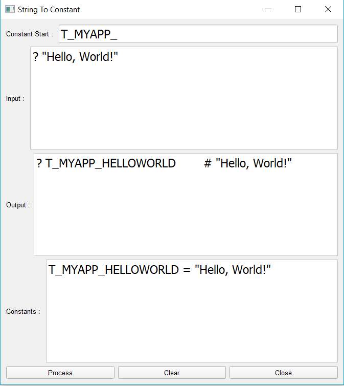
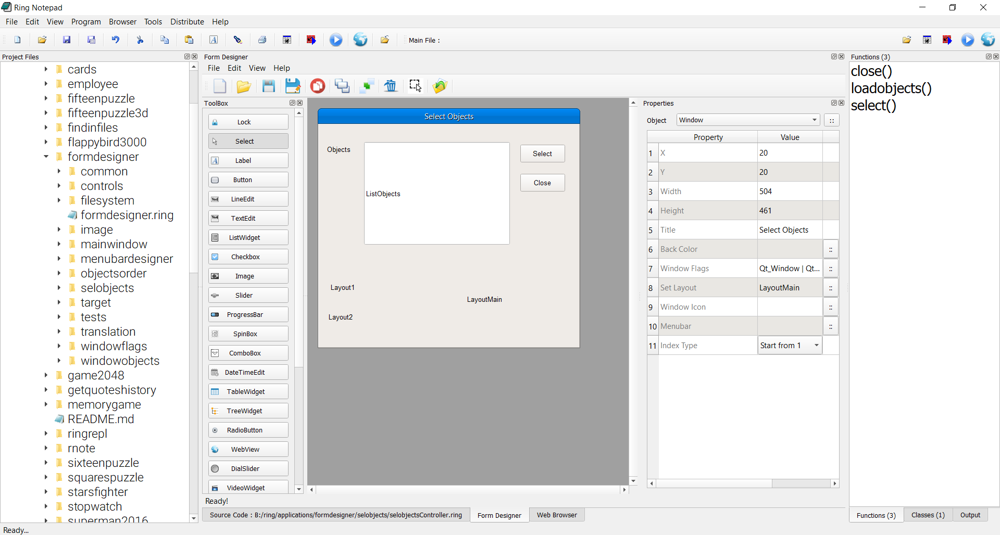

Multi-language Applications¶
There are many ways to create multi-language Ring application!
In this chapter we will learn about using the String2Constant tool
Using String2Constant¶
Starting from Ring 1.8 we have the String2Constant application
You will find this tool in the ring/samples/tools/string2constant folder
Using this tool we can convert the source code to be based on constants instead of string literals
Then we can store constants in separate source code files that we can translate to different languages
Where we can have special file for each language, like (English.ring, Arabic.ring and so on)
Using this simple tool, the Form Designer is translated to Arabic language too just as an example.
Form Designer Translation¶
You will find the form designer application in the ring/applications/formdesigner folder
The files used for translation are stored in the ring/applications/formdesinger/translation folder
You will find two files
- Arabic.ring
- English.ring
You can check these files to get an idea about constants definition.
The next section from the English.ring file
T_LANGUAGE = "english"
T_LAYOUTDIRECTION = 0 # Left to Right
T_FORMDESIGNER_FORMDESIGNER = "Form Designer"
T_FORMDESIGNER_FORMTITLE = "Form1"
T_FORMDESIGNER_FILE = "File"
T_FORMDESIGNER_NEW = "New"
T_FORMDESIGNER_OPEN = "Open"
T_FORMDESIGNER_SAVE = "Save"
T_FORMDESIGNER_SAVEAS = "Save As"
T_FORMDESIGNER_CLOSE = "Close"
The form designer source code files will use these constants instead of typing the string literals
the next section from the formdesigner/mainwindow/formdesignerview.ring
# Create the Main Window and use the Mdi Area
win = new qMainwindow() {
setWindowTitle(T_FORMDESIGNER_FORMDESIGNER) # "Form Designer"
setcentralWidget(this.oArea)
setLayoutDirection(T_LAYOUTDIRECTION)
}
- Using comments we can write the string literal to get more readable code.
- Using setLayoutDirection() method we can set the window direction to be Right To Left.
- Using the Load command, We can determine which translation file to use.
Forms Translation¶
After creating the form using the Form Designer, the View class will be generated.
We don’t modify the view class, We just add the translation through the Controller class.
For example, we have the form file : ring/formdesigner/selobjects/selobjects.rform
And we add the translation through the Controller class using the next code
And we define the constants in English.ring and Arabic.ring
class selobjectsController from windowsControllerParent
oView = new selobjectsView {
ListObjects.setselectionmode(QAbstractItemView_MultiSelection)
win.setwindowmodality(2)
# Translation
win.setWindowTitle(T_FORMDESIGNER_SELOBJECTS_TITLE)
win.setLayoutDirection(T_LAYOUTDIRECTION)
labelobjects.setText(T_FORMDESIGNER_SELOBJECTS_OBJECTS)
btnSelect.setText(T_FORMDESIGNER_SELOBJECTS_SELECT)
btnClose.setText(T_FORMDESIGNER_SELOBJECTS_CLOSE)
}